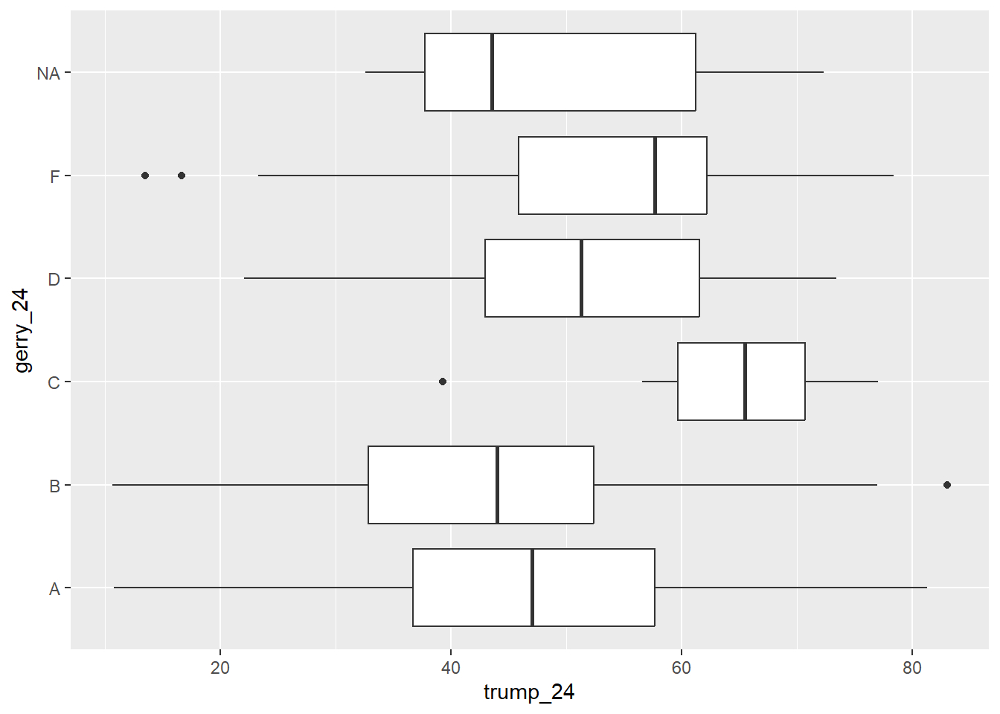
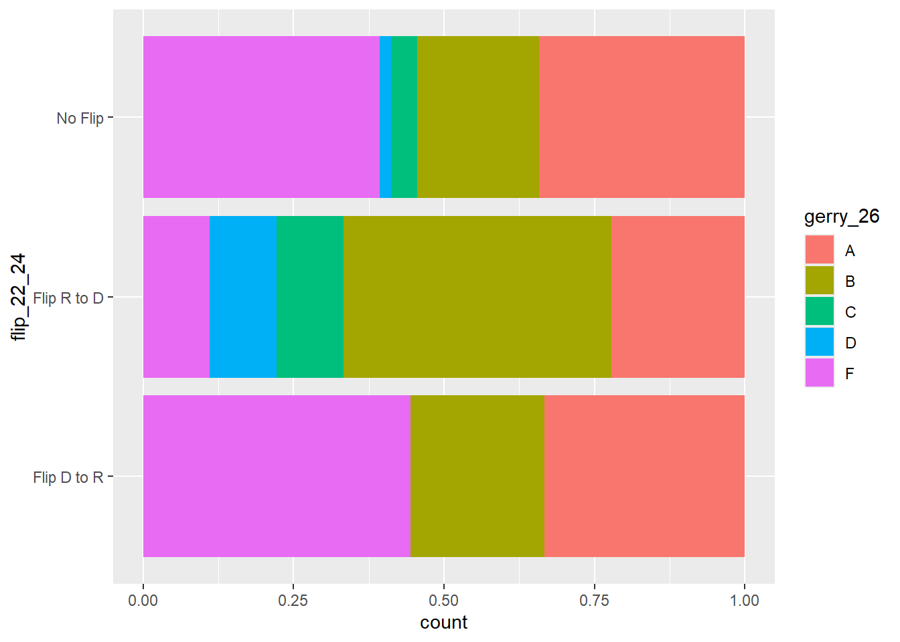

library(tidyverse)AE 04: Gerrymandering + data exploration I
Suggested answers
Application exercise
Answers
Important
These are suggested answers. This document should be used as a reference only; it’s not designed to be an exhaustive key.
Getting started
Packages
We’ll use the tidyverse package for this analysis.
Data
gerrymander <- read_csv("data/gerrymander.csv")glimpse(gerrymander)Rows: 443
Columns: 14
$ district <chr> "AK-00", "AL-01", "AL-02", "AL-03", "AL-04", "AL-05", "…
$ state_abb <chr> "AK", "AL", "AL", "AL", "AL", "AL", "AL", "AL", "AR", "…
$ state <chr> "Alaska", "Alabama", "Alabama", "Alabama", "Alabama", "…
$ house_rep_20 <chr> "Don Young", "Jerry Carl", "Barry Moore", "Mike Rogers"…
$ house_party_20 <chr> "Republican", "Republican", "Republican", "Republican",…
$ house_rep_22 <chr> "Mary Sattler Peltola", "Jerry L Carl", "Barry Moore", …
$ house_party_22 <chr> "Democrat", "Republican", "Republican", "Republican", "…
$ house_rep_24 <chr> "Nick Begich", "Barry Moore", "Shomari Figures", "Mike …
$ house_party_24 <chr> "Republican", "Republican", "Democrat", "Republican", "…
$ harris_24 <dbl> 41.41, 21.89, 53.52, 26.18, 15.96, 34.20, 29.68, 61.45,…
$ trump_24 <dbl> 54.54, 76.94, 45.31, 72.71, 83.02, 64.02, 68.47, 37.50,…
$ gerry_22 <chr> NA, "F", "F", "F", "F", "F", "F", "F", "C", "C", "C", "…
$ gerry_24 <chr> NA, "B", "B", "B", "B", "B", "B", "B", "C", "C", "C", "…
$ gerry_26 <chr> NA, "B", "B", "B", "B", "B", "B", "B", "C", "C", "C", "…Districts at the tails
Make side-by-side box plots of percent of vote received by Trump in 2024 Presidential Election by prevalence of gerrymandering. Identify any Congressional Districts that are potential outliers. Are they different from the rest of the Congressional Districts within the given gerrymandering level due to high support or low support for Trump in the 2024 Presidential Election? Which state are they in? Which city are they in?
ggplot(gerrymander, aes(x = trump_24, y = gerry_24)) +
geom_boxplot()Warning: Removed 8 rows containing non-finite outside the scale range
(`stat_boxplot()`).
gerrymander |>
filter(gerry_24 == "F", trump_24 < 20) |>
select(state, district, trump_24, gerry_24)# A tibble: 2 × 4
state district trump_24 gerry_24
<chr> <chr> <dbl> <chr>
1 Georgia GA-05 13.5 F
2 Illinois IL-07 16.7 F gerrymander |>
filter(gerry_24 == "C", trump_24 < 40) |>
select(state, district, trump_24, gerry_24)# A tibble: 1 × 4
state district trump_24 gerry_24
<chr> <chr> <dbl> <chr>
1 Mississippi MS-02 39.3 C gerrymander |>
filter(gerry_24 == "B", trump_24 > 80) |>
select(state, district, trump_24, gerry_24)# A tibble: 1 × 4
state district trump_24 gerry_24
<chr> <chr> <dbl> <chr>
1 Alabama AL-04 83.0 B Flips
How does the prevalence of various levels of gerrymandering for the 2026 election vary among Congressional Districts that flipped from Republican to Democrat in the 2024 election compared to the 2022 election? Support your answer with a visualization as well as summary statistics. Hint: Calculate the conditional distribution of prevalence of various levels of gerrymandering based on whether a Democrat flipped the seat in the 2024 election compared to the 2022 election.
gerrymander <- gerrymander |>
mutate(
flip_22_24 = case_when(
house_party_22 == "Republican" &
house_party_24 == "Democrat" ~ "Flip R to D",
house_party_22 == "Democrat" &
house_party_24 == "Republican" ~ "Flip D to R",
.default = "No Flip"
)
) |>
relocate(house_party_22, house_party_24, flip_22_24, gerry_26, .after = state)gerrymander |>
filter(!is.na(gerry_26)) |>
ggplot(aes(y = flip_22_24, fill = gerry_26)) +
geom_bar(position = "fill")
gerrymander |>
filter(!is.na(gerry_26)) |>
count(flip_22_24, gerry_26) |>
group_by(flip_22_24) |>
mutate(prop = n / sum(n))# A tibble: 13 × 4
# Groups: flip_22_24 [3]
flip_22_24 gerry_26 n prop
<chr> <chr> <int> <dbl>
1 Flip D to R A 3 0.333
2 Flip D to R B 2 0.222
3 Flip D to R F 4 0.444
4 Flip R to D A 2 0.222
5 Flip R to D B 4 0.444
6 Flip R to D C 1 0.111
7 Flip R to D D 1 0.111
8 Flip R to D F 1 0.111
9 No Flip A 142 0.342
10 No Flip B 84 0.202
11 No Flip C 18 0.0434
12 No Flip D 8 0.0193
13 No Flip F 163 0.393